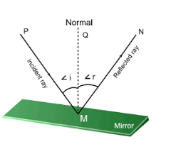

Important Definitions:
Incident Ray
The ray of light which strikes any surface is called the Incident Ray.
Reflected Ray
The ray of light which is bounced back by any reflecting surface is called the Reflected Ray
Point of Incidence
It is the point at which the Incident Ray falls on the reflecting surface
Normal
It is the line drawn perpendicular to the reflecting surface at the Point of Incidence
Angle of Incidence
The angle made by the Incident Ray with the Normal at the Point of Incidence. It is represented by i
Angle of Reflection
Angle made by the Reflected ray with the Normal at the Point of Incidence. It is represented by r
The Reflection Of Light
Object
Anything which gives out light either by itself or after reflection from it is said to be an object. For example: a candle, tubelight,etc.
Point Object
A very small object likr pin head is a point object and is represented by a dot (.)
Extended Object
Large object like car, bus, candle etc. are called extended objects and are represented by an arrow.( ↑)
Image
An image may be defined as that point, where the light rays coming from an object meet or appears to meet after reflection There are two types of images i.e: real image and virtual image.
Real Image
Real image is an image formed by the actual inersection of light rays.
It can be obtained on the screen.
eg:- The image formed on cinema screen
Virtual Image
If the rays of light responsible for an image formation do not intersect actually but appears to meet at some point, then the image is called virtual image.
It cannot be obtained on the screen.
eg:- The image formed by a plane mirror.

Plane Mirror
A plane glass sheet having a thin layer of silver metal deposited on one side which is protected by a coat of red paint. The light is reflected from silvered surface of the plane mirror.